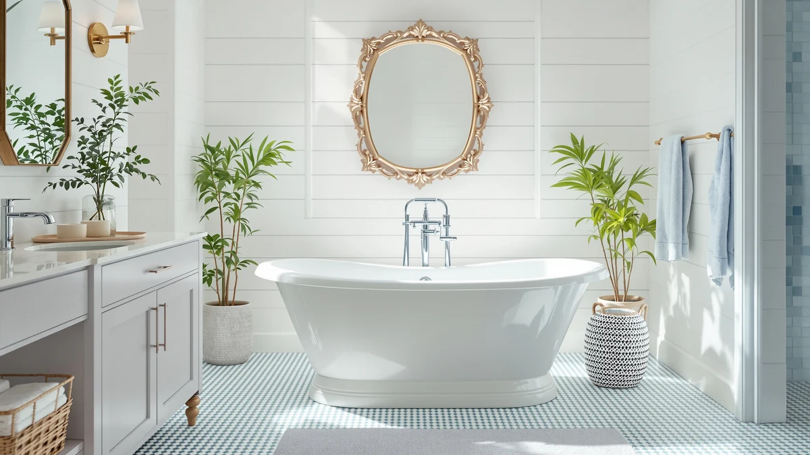

Things to Know Before You Buy
- An acrylic tub weighs 60 to 120 pounds empty; a cast iron tub weighs 300 to 500 pounds, so check your floor before you buy either one.
- In the acrylic vs cast iron tub matchup, cast iron wins on heat retention while acrylic wins on price and ease of installation.
- Acrylic freestanding tubs typically run $400 to $900; enameled cast iron clawfoot tubs start around $2,000 and climb from there.
- Cast iron's porcelain enamel resists scratches for decades. Acrylic can dull or craze over years of use, though a polishing kit restores the shine.
- Neither material includes the faucet. Budget separately for a floor-mount or wall-mount filler regardless of which tub you pick.
The acrylic vs cast iron tub decision mostly comes down to what your bathroom floor can support, what your budget allows, and how long you want your bathwater to stay hot. Both materials make solid freestanding soaking tubs, and picking the wrong one usually has nothing to do with quality. It happens when the tub does not match the house it goes into.
Acrylic tubs dominate new bathroom renovations because they are light, affordable, and forgiving to install. Cast iron tubs persist because nothing else holds heat as well or lasts as long once it is enameled and set in place. We compared both materials on construction, price, daily use, and long-term durability so you can match the tub to your bathroom instead of the other way around.
Quick Answer
For most bathrooms, acrylic is the easier and cheaper answer: it costs a fraction of cast iron, two people can carry it, and a double-wall design keeps water warm long enough for a normal bath. Choose cast iron instead if you want the longest possible heat retention, a finish that still looks new after twenty years, and you have confirmed your floor can carry 300 to 500 pounds plus water and bather. Neither one is objectively better; the acrylic vs cast iron tub choice depends on your floor, your budget, and how long you like to soak.
What is Acrylic?
Acrylic freestanding tubs are formed by heating sheets of acrylic plastic and vacuum-molding them over a mold, then reinforcing the shell with a fiberglass backing. Better models use a double-wall construction, sandwiching a layer of air or foam insulation between two acrylic shells to slow heat loss and dampen sound. The result is a smooth, glossy surface that feels warm to the touch immediately, unlike stone or metal.
Weight is the defining trait of acrylic. A typical 59 to 67-inch soaking tub weighs 60 to 120 pounds empty, light enough for two people to carry into a bathroom without a crew or a floor inspection. That lightness comes with tradeoffs: acrylic can scratch with abrasive cleaners, and enough direct heat or a heavy dropped object can crack the shell. Most scratches buff out with a plastic polish, and manufacturers back better tubs with 10 to 15-year warranties. In the acrylic vs cast iron tub comparison, this is the material built around ease of ownership rather than raw durability.
What is Cast Iron Tub?
A cast iron tub starts as molten iron poured into a mold and cooled into a single rigid shell, then finished with multiple coats of fired porcelain enamel baked directly onto the metal. That enamel layer is what you touch and clean, not the iron itself, and it is why quality cast iron tubs carry warranties of 20 to 25 years against chipping and fading.
The iron core is also why these tubs weigh 300 to 500 pounds empty, before you add water and a bather. That mass works in the tub's favor once it is filled: iron absorbs and holds heat, then radiates it back into the bathwater, so a soak stays hot noticeably longer than in a lighter material. The same mass means delivery and installation call for professional movers rather than a weekend DIY job, and older homes sometimes need a floor inspection before installation. Clawfoot styling is common on cast iron because the classic silhouette and the material's period-appropriate weight tend to go together. Weigh that tradeoff carefully in any acrylic vs cast iron tub decision before you order one.
Head-to-Head: Build Quality & Durability
Durability plays out differently for each material. Cast iron's porcelain enamel is fired at high temperatures and bonds to the metal, so it resists scratches from normal cleaning and holds its gloss for decades; owners of vintage cast iron tubs from the 1920s and 1930s often report the original enamel still looks presentable today. The main risk is a hard, direct impact, which can chip the enamel down to bare iron and expose it to rust if left unaddressed.
Acrylic takes a different kind of wear. The surface can pick up fine scratches from abrasive sponges or gritty cleaners, and years of sun exposure or harsh chemicals can leave it looking dull, a process called crazing. Neither issue is usually structural. Most scratches respond to a plastic-safe polishing compound, and a cracked shell, while rare, is a bigger repair than a chip in enamel. On raw build quality, cast iron wins the acrylic vs cast iron tub durability contest for anyone planning to keep the same tub for 20-plus years. For a tub you might replace in a decade anyway, acrylic's lighter wear pattern is easy to live with.
Head-to-Head: Price & Value
Acrylic wins on price at every stage. A quality freestanding acrylic tub typically runs $400 to $900, and because it is light enough to install without a crew, labor costs stay modest too. Enameled cast iron clawfoot tubs start around $2,000 and climb past $2,500 for larger or double-slipper models. Add professional delivery, and sometimes floor reinforcement, and the total gap between the two materials widens further.
Neither price includes the faucet, which is sold separately for both tub types. Where cast iron claws back some value is longevity: a tub that lasts 25-plus years without needing replacement spreads that upfront cost over more time than an acrylic tub you might swap out in 10 to 15 years. Still, for a fixed renovation budget, the acrylic vs cast iron tub price gap is the deciding factor for most buyers.
Head-to-Head: Use Experience
Day-to-day, the two materials feel different in ways that go beyond price. Step into an acrylic tub and it feels warm right away because plastic does not pull heat from your skin the way metal does. A double-wall acrylic tub holds a bath's temperature reasonably well, though the water still cools faster than it would in cast iron, and you will notice that difference most on baths longer than 30 minutes.
Cast iron takes longer to warm up initially, since the iron itself absorbs some of the first hot water that goes in, but once it reaches temperature it acts like a radiator and keeps giving heat back. That makes it the better choice if you regularly take long soaks and want the water hot at minute 40, not just minute 5. Sound is another difference worth knowing: acrylic can produce a hollow, drum-like sound when you tap it or step in, while cast iron feels and sounds solid, closer to a built-in tub. In the acrylic vs cast iron tub experience, the choice tracks closely with how long and how often you actually bathe.
When to Choose Acrylic
Choose acrylic if you want a straightforward renovation. It makes sense when your budget tops out under $1,000 for the tub, when you or a friend plan to carry and set the tub yourselves, and when your bathroom is on an upper floor where 300-plus pounds of cast iron would need a structural check first. It is also the practical pick if you take shorter, more frequent baths rather than long soaks, since the heat-retention gap matters less over 15 to 20 minutes.
If any of that describes your project, look at a double-wall acrylic model for the best balance of warmth retention and price. Between the two paths in this acrylic vs cast iron tub comparison, acrylic is the one that fits most standard renovations without extra planning.
When to Choose Cast Iron Tub
Choose cast iron if heat retention or a period look matters more to you than upfront cost. It makes sense when you take long baths and want the water still hot after 30 or 40 minutes, when you are restoring or matching a vintage bathroom where a clawfoot silhouette is part of the design, and when you want a finish that will still look new in two decades with minimal care.
Before you commit, confirm the practical side: your floor needs to support 300 to 500 pounds plus water and bather, your budget needs room for $2,000-plus on the tub alone, and you should plan on professional delivery rather than DIY. If those boxes check out, cast iron is the stronger long-term investment in the acrylic vs cast iron tub decision.
Our Top Picks
If this comparison points you toward cast iron, these three Signature Hardware clawfoot tubs are worth a closer look, spanning three lengths so you can match one to your bathroom's footprint. If acrylic fits your renovation better, our acrylic freestanding bathtub guide covers the lighter, budget-friendly options instead.

Editor’s Pick
Signature Hardware 312541 Lena 72"
The largest of the three at 72 inches, with a deep soak and a 25-year enamel warranty for anyone who wants the biggest cast iron clawfoot they can fit.
$2,599.00
Check Price on Amazon
Best Value
Signature Hardware 475639 Callaway 61"
A more compact 61-inch clawfoot at a lower price than the Lena, with the same enamel durability for bathrooms tighter on space.
$2,067.75
Check Price on Amazon
Premium Choice
Signature Hardware 426325 Miya 55"
A 55-inch clawfoot finished in black with oil-rubbed bronze feet, the upgrade pick for a bathroom that wants cast iron in a bolder finish than the standard white.
$1,729.00
Check Price on AmazonFrequently Asked Questions
Which holds heat better, acrylic or cast iron?
Cast iron, by a clear margin. The iron absorbs heat from the first fill and then radiates it back into the water, so a bath stays warm well past the 30-minute mark. Acrylic feels warm to the touch immediately, and a double-wall design helps, but the water still cools faster over a long soak.
How much does a cast iron tub weigh compared to acrylic?
A cast iron tub weighs 300 to 500 pounds empty, and closer to double that filled with water and a bather. An acrylic tub weighs 60 to 120 pounds empty, light enough for two people to carry without equipment. Confirm your floor's load capacity before ordering cast iron, especially on an upper story.
Is acrylic or cast iron cheaper to buy?
Acrylic, by a wide margin. Quality acrylic freestanding tubs run $400 to $900, while enameled cast iron clawfoot tubs typically start around $2,000 and go up from there depending on size and finish. Cast iron also adds delivery costs that acrylic usually avoids.
Can I install a freestanding tub myself?
An acrylic tub, in most cases yes. At 60 to 120 pounds it is a manageable two-person carry, and connecting a floor-mount filler and drain is a realistic weekend project. Cast iron's 300-plus pounds generally calls for professional movers to place it safely.
Which material lasts longer?
Cast iron has the edge on lifespan. Its fired porcelain enamel resists chips and holds its color for decades, with some vintage tubs still in service after 80-plus years. Acrylic can scratch or dull over many years of use, though it is repairable with a polishing kit and, being lighter, cheaper to replace when the time comes.
Final Verdict
There is no universal winner in the acrylic vs cast iron tub debate, only the right fit for your bathroom. Choose acrylic if you want an affordable, easy-to-install soaking tub that a couple of people can carry in themselves; choose cast iron if you want the deepest heat retention and a finish that will outlast the rest of your renovation. If cast iron is your answer, the Signature Hardware Lena 72 inch is the flagship worth the floor check and the higher price tag.